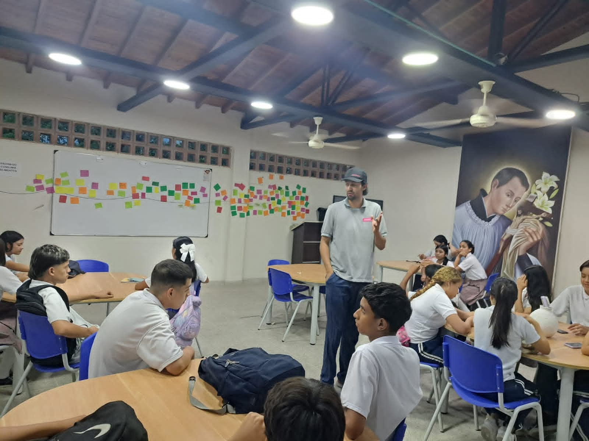
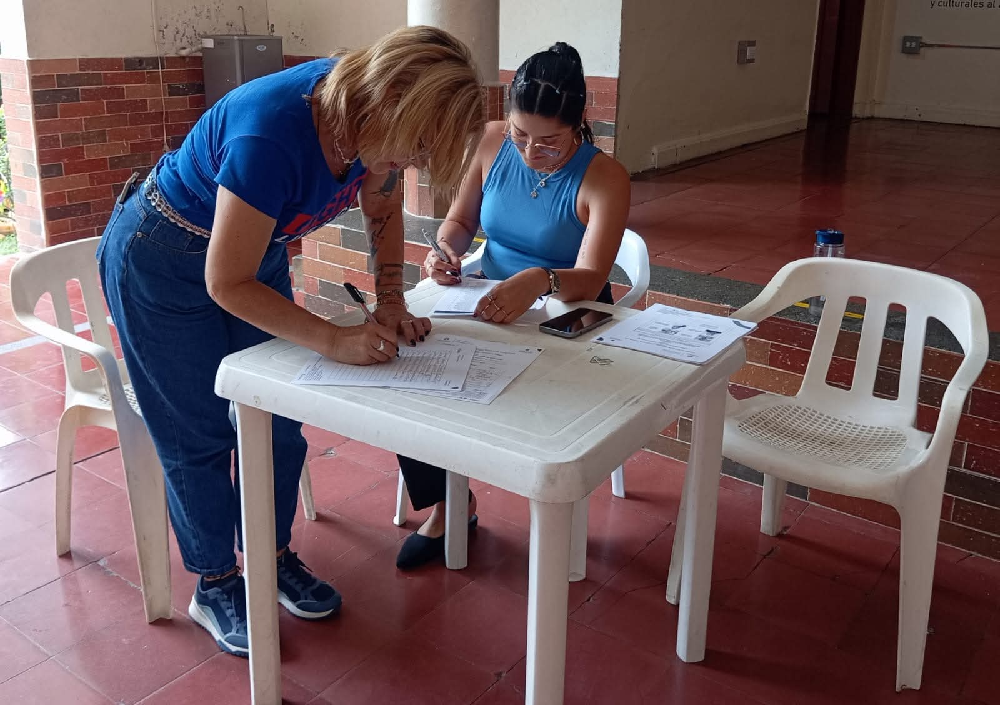

Taller Leo: lectura, Escritura y Oralidad
Nuestros estudiantes de grado octavo participaron con gran entusiasmo en el Taller LEO,
un espacio de aprendizaje y creatividad liderado por Camilo Jaramillo, bibliotecario de
Comfama.
Extendemos un agradecimiento muy especial a Camilo por su dedicación y compromiso en
este proceso formativo, y a la docente Villalba Muriel, por motivar e impulsar a los
estudiantes a aprovechar cada una de estas valiosas experiencias.
¡Seguimos apostando por la lectura, la escritura y la oralidad como herramientas
fundamentales para el crecimiento académico y personal de nuestros jóvenes!
19 de septiembre de 2025

Encuentro sindical del Magisterio Santafereño
El día de hoy, la Subdirectiva de ADIDA en Santa Fe de Antioquia llevó a cabo la Asamblea
General de Afiliados 2025, un espacio de carácter educativo, pedagógico y jurídico que
contó con la amplia participación de los docentes de nuestra institución.
Durante el encuentro se abordaron temas de gran importancia para el magisterio, entre
ellos:
Informe de la Secretaría de Educación sobre los avances del Plan de Desarrollo Municipal
y el cumplimiento de los acuerdos programáticos.
Espacios de formación sindical e informes de la Junta Directiva Central.
Estos espacios fortalecen la unidad del gremio docente y permiten seguir trabajando
colectivamente por una educación digna y de calidad en Santa Fe de Antioquia
11 de septiembrede 2025